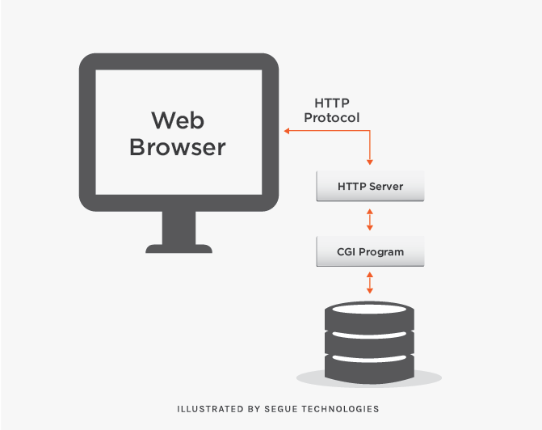

Introduction to Web Development By Wisflux Academy
Learn the basic concepts of web develeopment. How the web works and what are key points a web developer must go through
Overview

Web development is the process of creating websites and web applications. It is a broadterm involving various technologies, including web design, web content management,web scripting, web server, and web browser. We can also refer to the web developmentprocess as the development of a website.This document contains a list of the mostcommon web development technologies and tools.
Basic Concepts
Here are some of the basics of the web develeopment listed below, please go through all of them to understand the concepts
Part 1: What is Internet

The Internet, sometimes called simply "the Net," is a worldwide system of computernetworks -- a network of networks in which users at any one computer can, if they havepermission, get information from any other computer (and sometimes talk directly tousers at other computers).The Internet provides different online services. Some examples include: Web – acollection of billions of web pages that you can view with a web browser. Email – themost common method of sending and receiving messages online. Social media – websitesand apps that allow people to share comments, photos, and videos.
Part 2: What is WWW
The World Wide Web—commonly referred to as WWW, W3, or the Web—is aninterconnected system of public web pages accessible through the Internet. The Web isnot the same as the Internet: the Web is one of many applications built on top of theInternet.
Part 3: What is URL
Just as buildings and houses have a street address, web pages also have unique addressesto help people locate them. On the Internet, these addresses are called URLs (UniformResource Locators).
Part 4: What is a Web browser
A web browser is application software for accessing the World Wide Web or a localwebsite. When a user requests a web page from a particular website, the web browserretrieves the necessary content from a web server and then displays the page on theuser's device
Part 5: What is Client and Client Side
It is simply a service consumer. In web development, 'client side' refers to everything in aweb application that is displayed or takes place on the client (end user device). Thisincludes what the user sees, such as text, images, and the rest of the UI, along with anyactions that an application performs within the user's browser.
Part 6: What is Server and Service Side
The server provides services to the client. A web server is software and hardware thatuses HTTP (Hypertext Transfer Protocol) and other protocols to respond to clientrequests made over the World Wide Web. The main job of a web server is to displaywebsite content through storing, processing and delivering web pages to users.
Part 7: What is HTTP/HTTPS
Hypertext Transfer Protocol Secure is an extension of the Hypertext Transfer Protocol. Itis used for secure communication over a computer network, and is widely used on theInternet. In HTTPS, the communication protocol is encrypted using Transport LayerSecurity or, formerly, Secure Sockets Layer.
What is Web Development
Web development is the work involved in developing a website for the Internet. Webdevelopment can range from developing a simple single static page of plain text tocomplex web applications, electronic businesses, and social network services.
Subparts of Web development
Part 1:Frontend web development

It includes client side web development and writingthe code that will be directly sent to the client's web browser for providing himservices with a good user experience. It includes technologies such as :-HTML, CSS, Javascript, TypeScript, React, Angular
Part 2:Backend web development

It includes the business code like storing data ofusers, providing authentication and authorization to users and providing theservices. It includes technologies like. -Node JS, JavaScript, TypeScript, Express, Nest JS
Summary
Web development is filled with thousands of concepts, frameworks, services and paradigms. To learn web development, one must spend at least 4-6 hours everyday andsearch for various questions and find their answers. Making projects is the best way oflearning web development as it makes us face new challenges every day and force us to findnew answers.